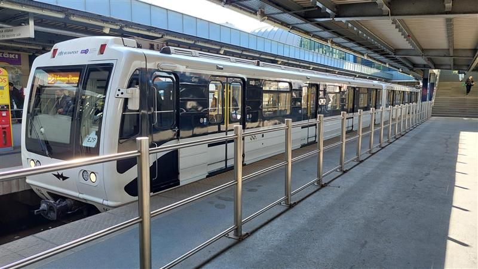

a városok fejlesztése
A modern városfejlesztés egyik legfontosabb szempontja a közlekedés. A jól megtervezett közlekedési hálózat nemcsak megkönnyíti az emberek mindennapi életét, hanem hozzájárul a gazdasági fejlődéshez és a környezetvédelemhez is. A közlekedés köré tervezett városok célja, hogy az emberek könnyen, gyorsan és fenntartható módon juthassanak el otthonuktól a munkahelyükre, iskolába, vagy akár a szabadidős helyszínekre. A hatékony várostervezés során figyelembe kell venni a különböző közlekedési módokat autó, tömegközlekedés, kerékpár, gyaloglás és ezeket összekapcsolva, egységes rendszerként kell működtetni. A városmagok sűrítése, a közösségi közlekedés fejlesztése, és a kerékpárutak bővítése mind olyan lépések, amelyek elősegítik a fenntartható és élhető városi környezet kialakítását.
<<<<<<< HEAD A jövő városai a "15 perces város" elvét követik, ahol minden fontos szolgáltatás iskola, bolt, orvosi rendelő elérhető negyedórás sétával vagy biciklizéssel. Ez nemcsak csökkenti az autóforgalmat és a szennyezést, de növeli a lakók életminőségét is, épp ezért ha ezt bármikor is sikerülne megvalósítani akkor az emberiség sokkal tovább fennmaradna. Viszont mint mindennek, ennek is van ára, hatalmas, éveken át történő építkezések és több milliárd dollár, de erre majd másik cikkben térünk át. =======
A jövő városai a "15 perces város" elvét követik, ahol minden fontos szolgáltatás iskola, bolt, orvosi rendelő elérhető negyedórás sétával vagy biciklizéssel. Ez nemcsak csökkenti az autóforgalmat és a szennyezést, de növeli a lakók életminőségét is, épp ezért ha ezt bármikor is sikerülne megvalósítani akkor az emberiség sokkal tovább fennmaradna. Viszont mint mindennek, ennek is van ára, hatalmas, éveken át történő építkezések és több milliárd dollár, de erre majd másik cikkben térünk át. >>>>>>> 82fd4cd2dcf1604126d95f9d9c3607929a46509b
A jövő városai a "15 perces város" elvét követik, ahol minden fontos szolgáltatás iskola, bolt, orvosi rendelő elérhető negyedórás sétával vagy biciklizéssel. Ez nemcsak csökkenti az autóforgalmat és a szennyezést, de növeli a lakók életminőségét is, épp ezért ha ezt bármikor is sikerülne megvalósítani akkor az emberiség sokkal tovább fennmaradna. Viszont mint mindennek, ennek is van ára, hatalmas, éveken át történő építkezések és több milliárd dollár, de erre majd másik cikkben térünk át.